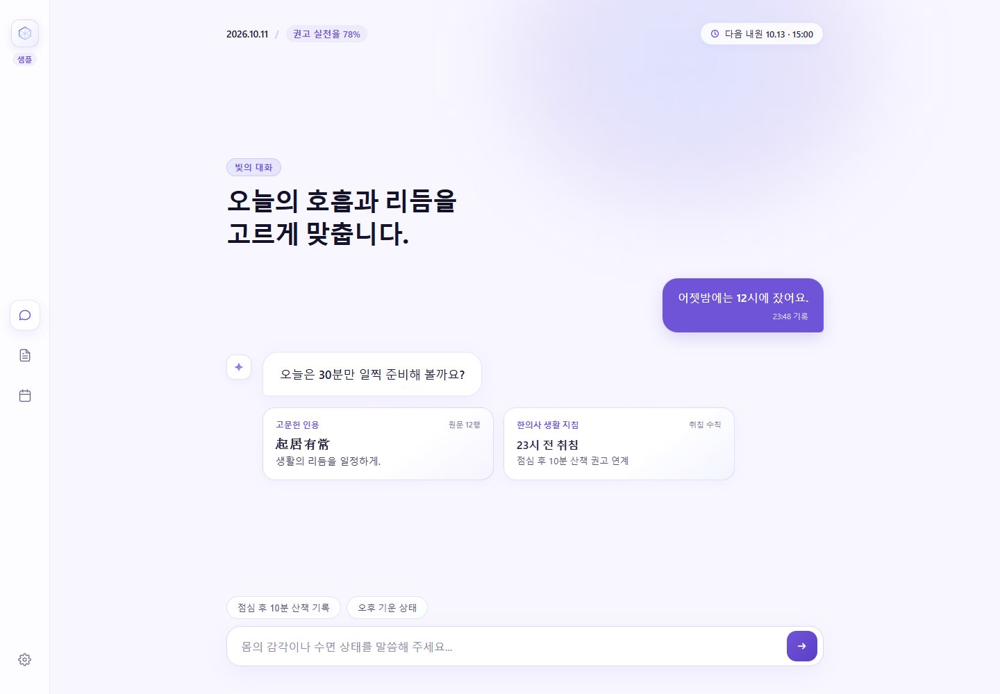
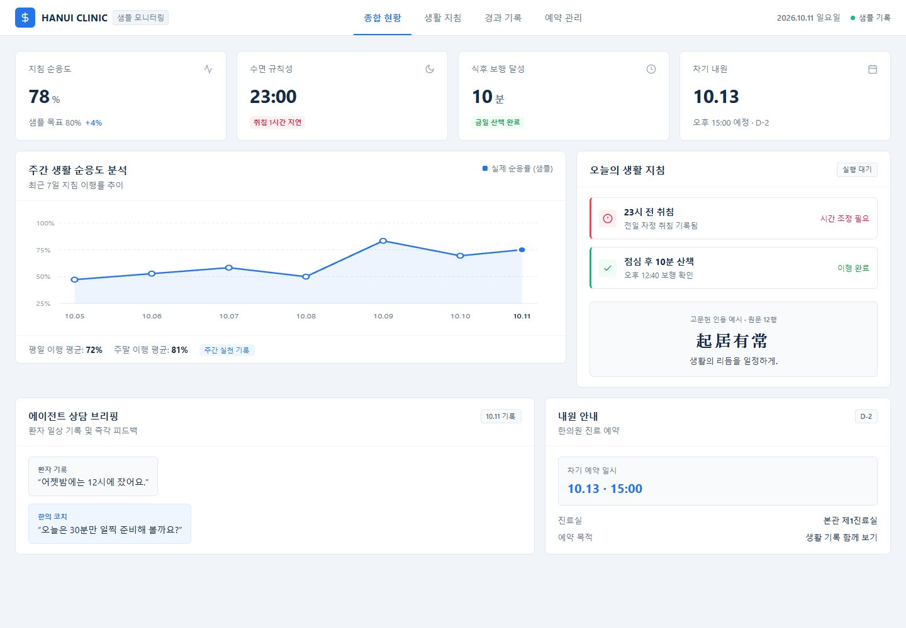
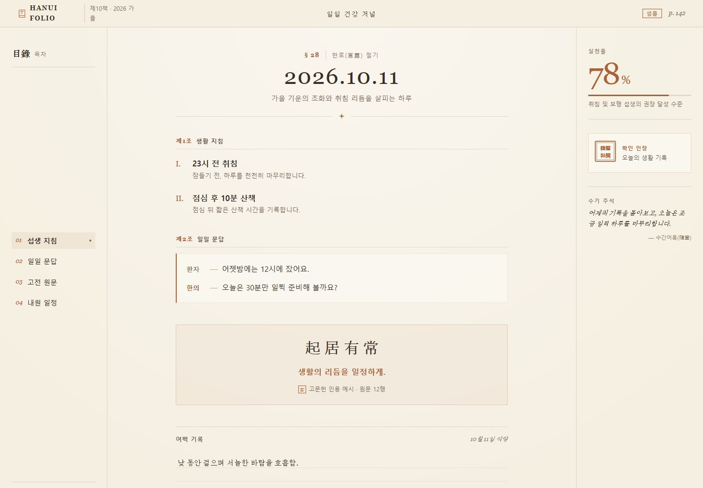
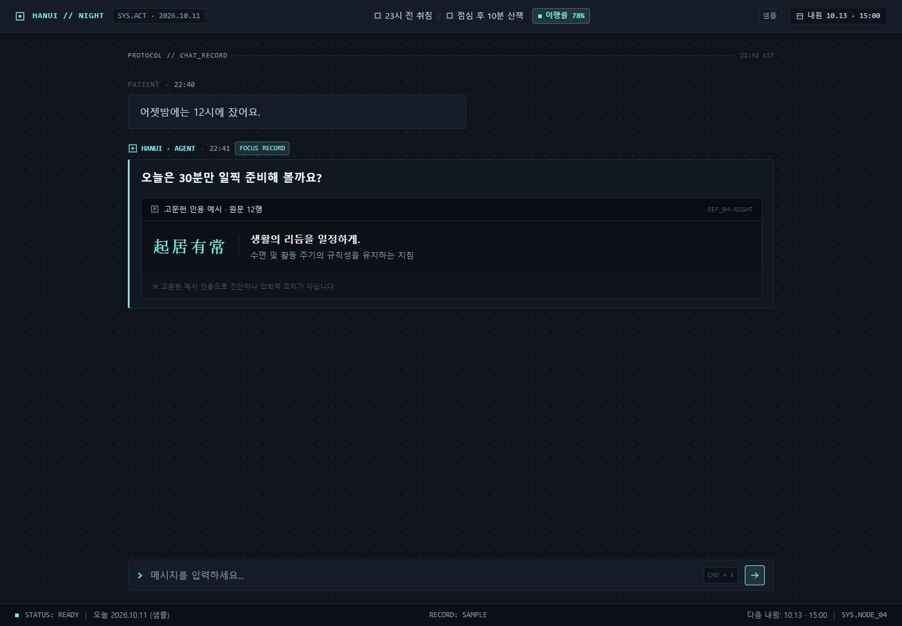
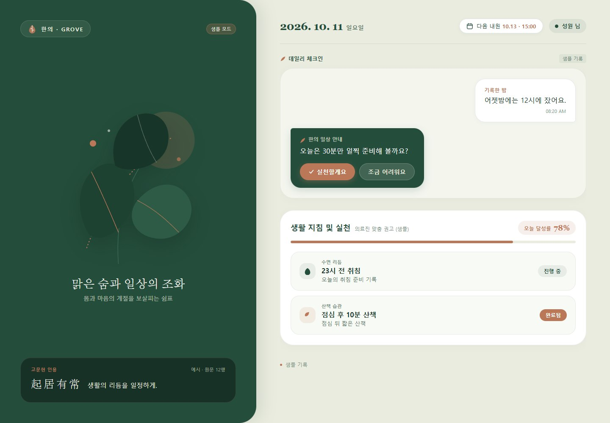
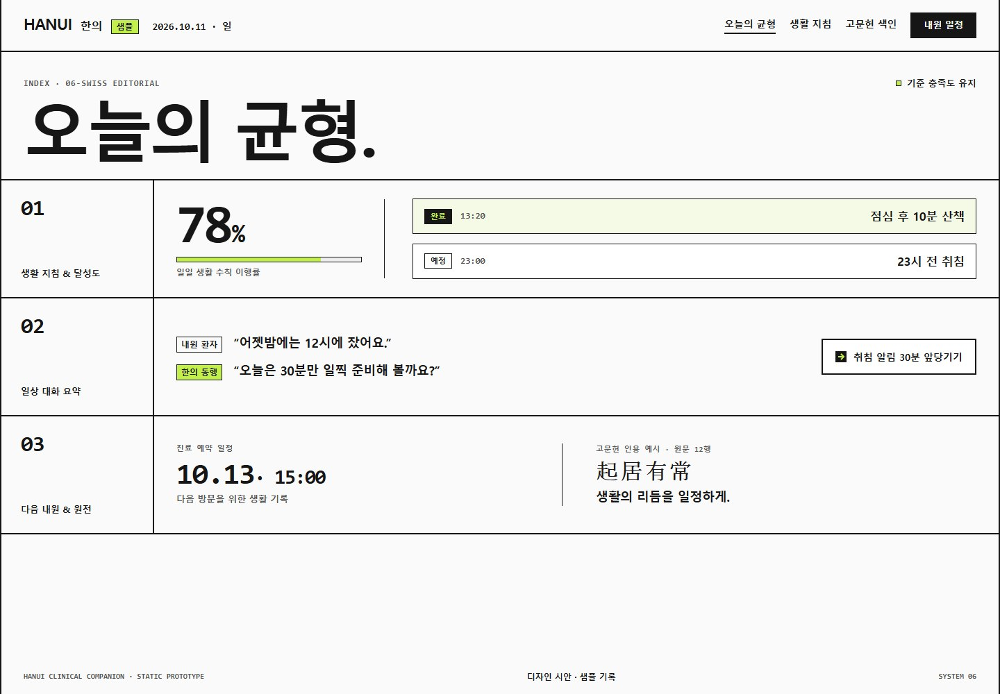
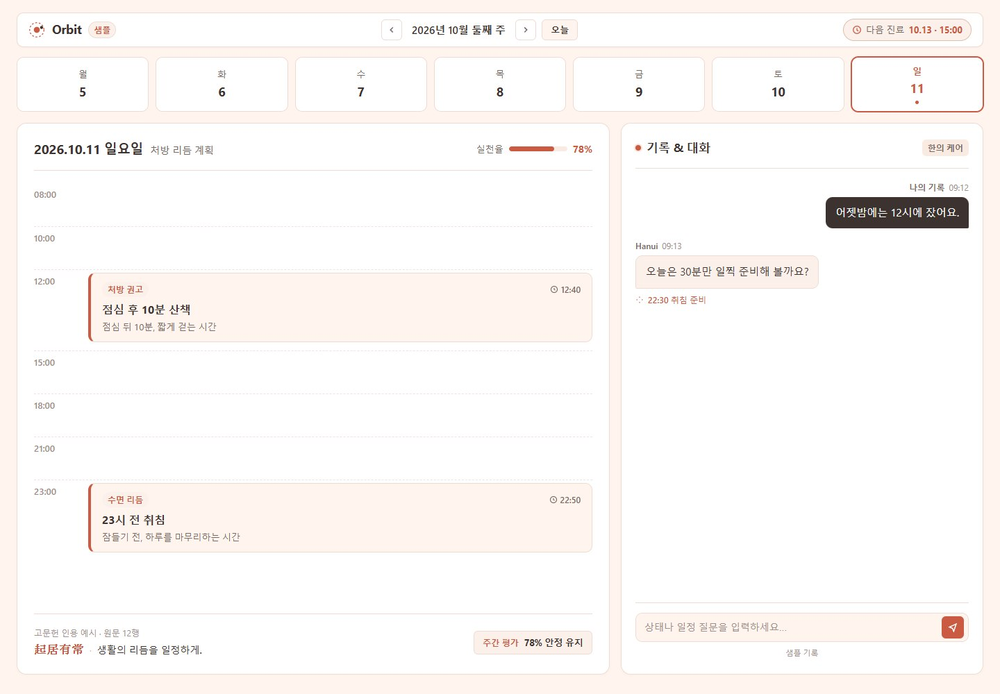
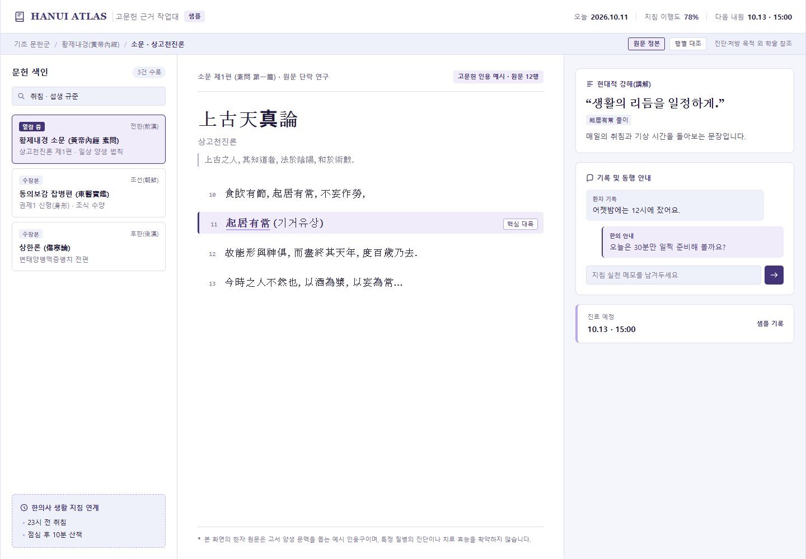
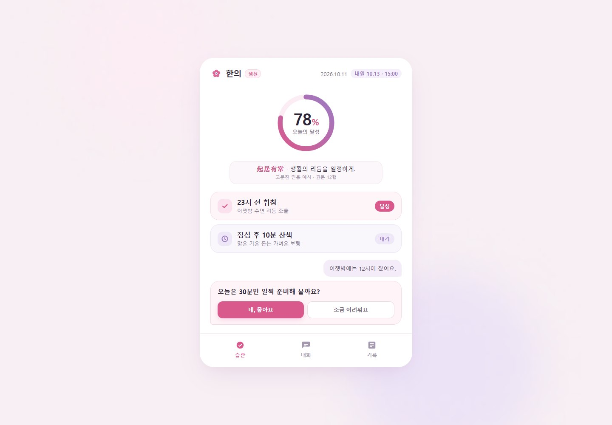
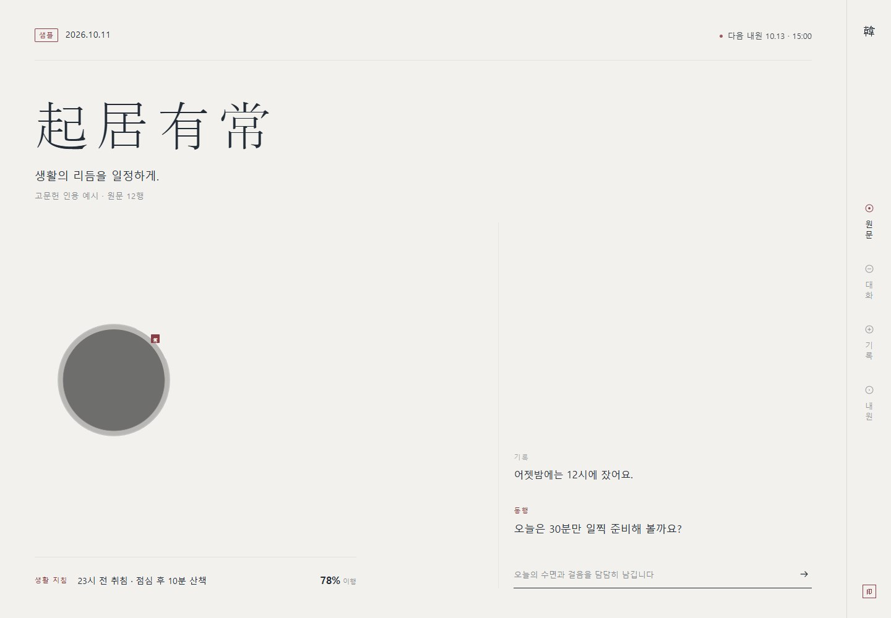

HANUI / DESIGN EXPLORATIONS
열 가지 다른 한의.
구조 · 색감 · 타이포 · 아이콘
시안을 누르면 전체 화면으로 열립니다.

01Prism · 빛의 대화
왼쪽 미니 레일 + 넓은 중앙 대화 캔버스

02Clinic · 명료한 관리
상단 탭 + 지표 행 + 관리 대시보드

03Folio · 나의 건강 저널
책 목차 + 중앙 저널 + 여백 메모

04Night · 집중하는 에이전트
전체 화면 대화 + 상단 명령 바 + 하단 상태 띠

05Grove · 일상의 회복
식물 그래픽이 있는 왼쪽 면 + 오른쪽 체크인

06Swiss · 선명한 건강
큰 타이포 + 번호를 붙인 가로 정보 띠

07Orbit · 하루를 설계하다
가로 주간 캘린더 + 시간축 + 오른쪽 대화 패널

08Atlas · 근거를 읽는 공간
문헌 목록 / 원문 리더 / 풀이의 3열 작업대

09Bloom · 가벼운 습관
중앙 모바일 앱 구조 + 하단 내비게이션

10Zen · 조용한 한의학
오른쪽 세로 내비게이션 + 비대칭 원문·대화